Firma, aprovisionamiento y distribución de apps¶
Introducción¶
En la sesión de hoy estudiaremos los elementos que proporciona la plataforma iOS para:
- Ejecutar apps en dispositivos reales.
- Configurar perfiles de aprovisionamiento en el Programa de
Desarrollo de la Universidad que nos permitan:
- Distribuir nuestras apps en dispositivos de prueba.
- Utilizar APIs de los servicios de iOS no disponibles en la cuenta de desarrollador gratuita.
- Probar y distribuir apps usando Test Flight y App Store Connect.
Seguridad en las apps¶
La seguridad es uno de los elementos fundamentales de la plataforma iOS. En concreto, el sistema de instalación y ejecución de apps en dispositivos reales contempla la necesidad de que las apps se ejecuten de forma segura y sin comprometer la integridad de la plataforma, eliminando virus, malware o ataques no autorizados.
El documento iOS Security Guide detalla todos los elementos que conforman la seguridad de la plataforma. Uno de los elementos más críticos de la arquitectura son las apps.
Para garantizar la autoría del desarrollador y la no modificación del código, todo el código ejecutable que se ejecute en un dispositivo iOS debe haber sido firmado con un certificado generado por Apple. Al arrancar la aplicación el sistema se asegura de que el código de la app no ha sido modificado desde la última vez que fue instalada o actualizada.
Para obtener un certificado, los desarrolladores deben registrase en el Apple Developer Program. Para publicar una app en el App Store, es necesario haberla firmado. De esta forma, toda app que nos instalemos en nuestros dispositivos ha sido desarrollada por una persona física u organización identificable.
A diferencia de otras plataformas móviles, iOS no permite que los usuarios instalen de páginas web apps no firmadas, potencialmente maliciosas. Tampoco permite ejecutar código no fiable.
Cuenta de desarrollador de Apple¶
Distintos programas de desarrollo¶
Apple define varios tipos de programas de desarrollo:
- Programa gratuito
- Programa de desarrollador de Apple (Apple Developer Program) - $99 al año
- Programa de desarrollador de empresa (Apple Developer Enterprise Program) - $299 al año
Si sólo queremos empezar a desarrollar y probar apps en nuestro dispositivo iOS basta con darse de alta de forma gratuita en el portal del desarrollador (member center) de Apple con un Apple ID.
El programa de pago de desarrollador de Apple permite utilizar funcionalidades avanzadas, distribuir apps a dispositivos de prueba o subir nuestra app al App Store.
El programa de desarrollador de empresa permite distribuir apps in-house, en los dispositivos del personal de la empresa, sin necesidad de usar el App Store.
Además de los anteriores programas, Apple ofrece el denominado iOS Developer University Program orientado a la formación en iOS en la universidad, que permite acceder a funcionalidades intermedias entre el programa gratuito y el programa de pago.
Este programa permite utilizar servicios de Apple no disponibles en el programa gratuito y ejecutar apps en dispositivos registrados, no solo en el dispositivo de desarrollo.
Dependiendo del rol es posible acceder a distintas opciones. Hay dos
tipos de roles principales: Admin (administrador de la organización)
y Member (miembro de la organización).
La Universidad de Alicante participa en este programa y probaremos sus características.
En concreto, las características de cada uno de los programas se muestra en la siguiente tabla https://developer.apple.com/support/compare-memberships/:
Equipo de desarrollo¶
En los programas de pago de desarrollador de Apple es posible trabajar con un equipo de desarrolladores. No es necesario darse de alta como organización para componer un equipo.
Cuando se da de alta un programa de desarrollo se crea un identificador de equipo único (Team ID) que compartirán todos los desarrolladores del equipo. Se puede consultar el identificador de equipo en la opción Membership del portal del desarrollador.

Se pueden añadir desarrolladores al equipo desde el App Store Connect, en la opción de Usuarios y Acceso.
También es posible configurar los permisos de los desarrolladores del equipo para que puedan subir apps o probarlas como testers en Test Flight.
También se pueden configurar estas opciones en el programa universitario.
Demo¶
Veremos una demostración en la que accederemos al portal del desarrollador y al App Store Connect usando distintos perfiles:
- Perfil gratuito (domingo.gallardo.appledev2@gmail.com)
- Miembro de la cuenta de la universidad (domingo.gallardo.appledev1@gmail.com)
- Administrador de la cuenta de la universidad (domingo@dccia.ua.es)
- Perfil de pago (domingo@dccia.ua.es)
Perfil gratuito¶
Para darse de alta como desarrollador de Apple es necesario dar de alta un Apple ID y definir una autenticación de doble factor.
Con esta forma de autenticación activada, cada vez que intentes acceder a tu cuenta desde un nuevo dispositivo tendrás que introducir un código de autorización que se envía a tus dispositivos autorizados en los que estás logeado.
También es posible recibir un código de autorización en un teléfono móvil que deberás proporcionar en tu registro.
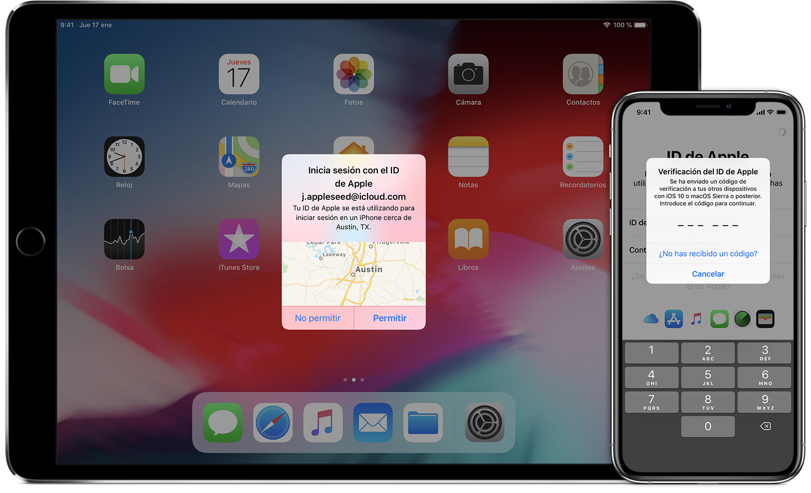
Una vez dados de alta como desarrolladores de Apple podremos acceder al portal del desarrollador.
Con esta cuenta gratuita podremos comenzar a desarrollar apps y probarlas en nuestro dispositivo de desarrollo. Pero este desarrollo estará limitado. No podremos distribuirlas a más dispositivos ni utilizar servicios avanzados de Apple.
Miembro del equipo de la UA¶
Si añadimos nuestra cuenta al equipo de la Universidad de Alicante, podremos gestionar servicios y capacidades adicionales. Esta es la cuenta que usaremos durante la asignatura.
En el menú de la izquierda podemos comprobar que hay opciones adicionales a la cuenta gratuita.
Miembro de pago¶
Por último, si usamos una cuenta de pago, tenemos opciones adicionales:
También tenemos acceso al portal de gestión de nuestras apps, el App Store Connect desde donde gestionar recursos relacionados con nuestro equipo de desarrollo y prueba, así como preparar las apps para su distribución en la App Store.

Fin de la demo¶
Certificados¶
Código firmado¶
Para poder tanto ejecutar una app en un dispositivo físico como distribuirla en el App Store es necesario firmar su código digitalmente.
La firma digital del código (code signing) permite al sistema operativo identificar quién ha firmado la app y verificar que no se ha modificado desde el momento de su firma. El código ejecutable está protegido por la firma y ésta se invalida si el código cambia. Los recursos de la app como ficheros nib o imágenes no están firmados.
En tiempo de ejecución, el sistema iOS comprueba el código firmado de todas las páginas ejecutables de memoria cuando se cargan, para asegurar que la app no ha sido modificada desde que fue instalada o actualizada por última vez.
Para poder firmar una app es necesario instalar un certificado proporcionado por Apple que proporciona la clave privada con la que se realiza la firma.
Identidad de firma¶

Una identidad de firma (signing identity) consiste en una pareja de clave pública y clave privada que proporciona Apple en el certificado de desarrollador.
El certificado es creado por Xcode al añadir la cuenta de usuario y se almacena en el llavero de inicio de sesión del Mac en el que se realiza el desarrollo (se puede consultar con la aplicación Acceso a llaveros) y en el portal del desarrollador de Apple.
La clave privada se usa para firmar la aplicación. La clave pública del certificado determina la identidad del desarrollador. La mantiene Apple en el centro de desarrollador y se guarda en los perfiles de aprovisionamiento del equipo de desarrollo.
Se necesita también un certificado intermedio proporcionado por Apple. Cuando instalas Xcode este certificado intermedio se guarda en el llavero.
Es muy importante conservar segura la clave privada, como si fuera una contraseña de una cuenta. Debes mantener una contraseña segura de tu pareja clave pública-privada. Si se pierde la clave privada, tendrás que crear una identidad completamente nueva para firmar el código. O peor aún, si alguien se hace con tu clave privada puede hacerse pasar por ti e intentar distribuir una app con código malicioso. Esto podría hacer que Apple revocara tus credenciales de desarrollador.
Tipos de certificados¶
Existen varios tipos de certificados de desarrollo, de distribución, para el servidor de notificaciones push, etc. El certificado de desarrollador permite ejecutar aplicaciones en un dispositivo. El de distribución permite enviarla al App Store.
Los certificados de desarrollo identifican a una persona del equipo. Los certificados de distribución identifican al equipo y pueden ser compartidos por los miembros del equipo que tienen permiso para enviar apps al store.
Todos los certificados son proporcionados por Apple.
Para comprobar el tipo de certificado podemos consultar el portal del desarrollador, Xcode o Acceso a llaveros.
Gestión de los certificados en Xcode¶
Xcode mantiene nuestra identidad (Apple ID) y nuestros certificados.
En el caso de pertenecer a más de un programa de desarrollo (por ejemplo al programa educativo de la UA y a nuestro programa personal) Xcode muestra los dos equipos y nos permite utilizar el que nos interese en cada momento.
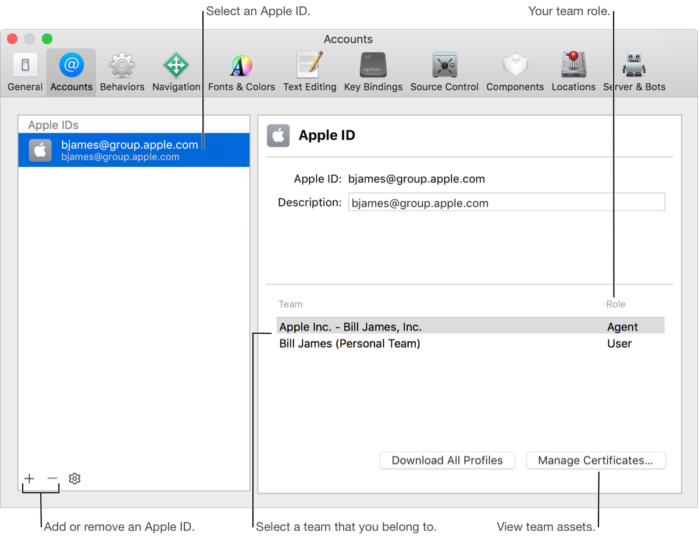
Creación e instalación de certificados¶
Es posible generar e instalar manualmente los certificados, pero es más sencillo dejar que sea Xcode quien los gestione.
Al firmar una aplicación por primera vez, Xcode se conecta a los servidores de Apple e instala automáticamente el certificado de firma.

Ejecución de apps en dispositivos reales¶
Para la instalación y ejecución de una app iOS en un dispositivo físico es necesario realizar una configuración del target (binario que se instala en el dispositivo) que incluye múltiples procesos:
-
Firma digital del binario con un certificado del desarrollador proporcionado por Apple (Signing Certificate).
-
Instalación de un perfil de aprovisionamiento (Provisioning Profile) compatible con el bundle identifier de la app que determina, entre otros: servicios de la plataforma Apple a los que la app puede acceder (capabilities y entitlements) y dispositivos concretos (IDs) autorizados en los que puede ejecutarse la app (lo veremos más adelante).
Xcode facilita la realización de todos estos procesos.
El resultado de estos procesos es un fichero binario .ipa firmado digitalmente.
La forma habitual de instalar una app en un dispositivo iOS es descargándola del App Store. Pero también existen formas alternativas, para el caso de dispositivos de prueba o apps distribuidas internamente en una empresa (in-house). En estos casos es posible instalar las apps desde Test Flight, desde una web o con el programa de MacOS Apple Configurator.
Resumiendo las distintas condiciones posibles, un dispositivo iOS puede ejecutar una app si:
- El dispositivo es un dispositivo de desarrollo inicializado por Xcode.
- El dispositivo tiene instalado un perfil de aprovisionamiento aprobado por el usuario, que contiene el UUID del propio dispositivo y el certificado contiene la clave pública del desarrollador que ha firmado la app.
- Se trata de una versión beta de la app que se ha instalado con Test Flight.
- El dispositivo tiene instalado un perfil de aprovisionamiento aprobado por el usuario y la app está firmada con un certificado de empresa proporcionado por Apple.
- Proviene del App Store y está firmada con un certificado de distribución en el App Store.
Demo¶
Vamos a demostrar cómo firmar una app y cómo ejecutarla en un dispositivo autorizado por Xcode, usando el perfil de desarrollador de la cuenta gratuita de Apple y después usando el perfil de desarrollador del equipo de la Universidad de Alicante.
Instalación de la identidad de firma¶
Una vez creado el Apple ID, Xcode facilita el proceso de generación de nuestra identidad de firma y de nuestro certificado de desarrollador.
Escogemos Xcode > Preferences y pinchamos en el signo + para añadir Apple ID.


Si todo ha ido bien, Xcode mostrará la información de nuestro perfil gratuito.
Firma de una app¶
Para firmar una app con Xcode debemos seleccionar el proyecto completo, el target y, en el apartado General, rellenar el bundle ID de la app y seleccionar tu identidad de firma en la opción Signing & Capabilities.
El bundle ID debe ser un identificador único. Si utilizamos uno que ya se ha usado Xcode indicará un error. Podemos utilizar nuestro nombre de login, seguido de un punto y del nombre de la app.
App ejemplo ToDo¶
Vamos a utilizar una app ya codificada para probar todos los conceptos de esta sesión. Se trata de una app muy sencilla, con la que podemos gestionar una lista de tareas por hacer.
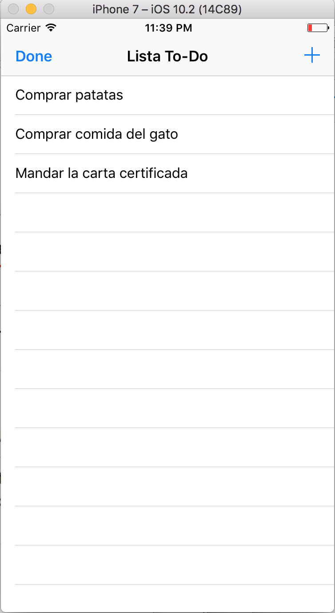
Estando en el programa de desarrollo gratuito podemos probar la app en nuestro móvil de desarrollo. Para ello es necesario firmar el código compilado de la app con el certificado de desarrollador que acabamos de obtener.
Al firmar la app, Xcode creará automáticamente el certificado de desarrollador.
Comprobación del certificado¶
En la pantalla de Xcode > Preferences... > Accounts pulsamos Manage Certificates... para comprobar el certificado recién creado.
Podemos gestionar los certificados (crear nuevos, exportar, importar, examinar) desde esta pantalla. Podemos encontrar más información en el manual de Xcode.
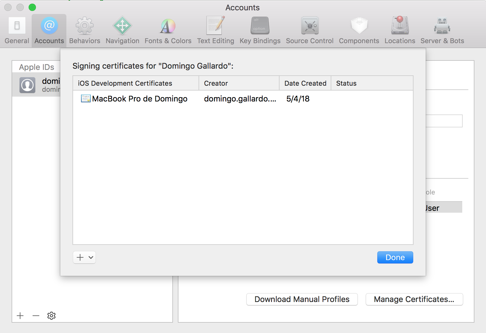

Comprobación de la identidad de firma en Acceso a Llaveros¶
En la aplicación Acceso a Llaveros podemos comprobar que el certificado se ha instalado junto con la clave privada en Mis certificados e Inicio de sesión.

Conexión de un dispositivo de desarrollo a Xcode¶
Una vez que se ha firmado la aplicación es posible ejecutarla en un dispositivo de desarrollo conectado a Xcode.
Comenzamos conectando el dispositivo iOS al ordenador. Se debe aceptar en el dispositivo un mensaje en el que se pide confirmación para confiar en el ordenador.
Después, en Xcode seleccionamos Window > Devices para comprobar que se ha conectado correctamente. En esa ventana se puede acceder al identificador UUID del dispositivo.
Es posible activar la conexión inalámbrica al dispositivo.
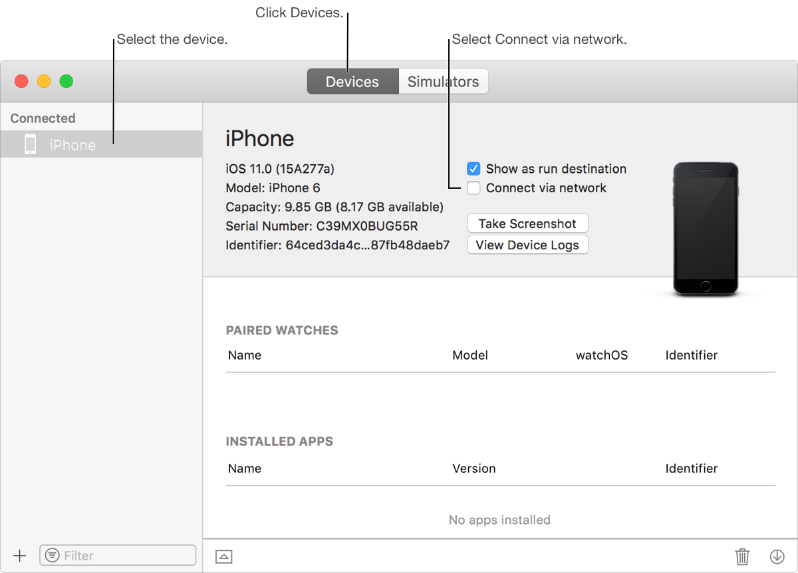
Prueba en un dispositivo real¶
Seleccionamos el dispositivo en el menú de ejecución y ejecutamos para que la app se instale en el dispositivo.
Es posible desplegar y ejecutar la aplicación en el dispositivo de forma inalámbrica.
Autorización al desarrollador en el dispositivo¶
Al ser un dispositivo de prueba gestionado automáticamente por Xcode, debemos autorizar al desarrollador antes de poder lanzarse la app.

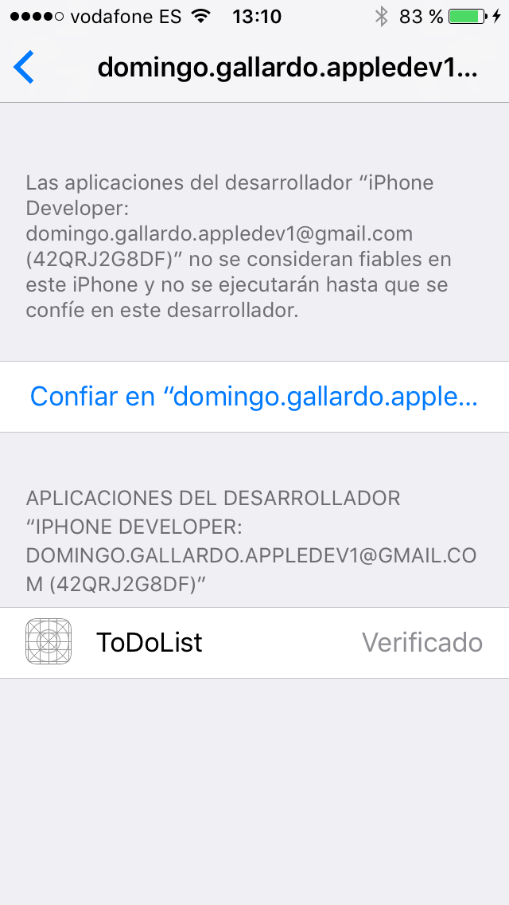


Archivo y distribución de la app¶
Seleccionando la opción de Xcode Product > Archive se accede al panel de archivo y distribución de la app
Sin embargo, al estar registrado en el programa gratuito no es posible seleccionar ninguna forma de distribución de la app.
Cuidado
Para poder pulsar la opción Archive debe estar seleccionada la opción Generic iOS Device en el menú de ejecución. Si está seleccionado un modelo concreto de iPhone la opción Archive se deshabilita.
Firma con el equipo de la UA¶
Podemos firmar con el equipo de la UA cambiando el bundle ID,
seleccionando el Team Universidad de Alicante.
Al seleccionar el equipo Universidad de Alicante Xcode selecciona nuestro
certificado específico asociado al equipo de la UA y firma con él la
aplicación.
Podemos instalar cualquier perfil de aprovisionamiento creado en el
equipo de la UA que sea compatible con el bundle ID. Para ello
desmarcamos la opción Automatically manage signing y descargamos el
perfil que nos interese. Un perfil de aprovisionamiento contiene un
listado de capacidades que podemos activar en la app y un listado de
dispositivos en los que podemos ejecutarla. Más adelante explicaremos
esto con más detalle.
Podemos seleccionar el perfil denominado Genérico:
Una vez instalado el perfil de aprovisionamiento, la configuración de firma de la app queda como se muestra en la siguiente imagen:
Archivo y distribución de la app¶
Ahora ya podemos exportar la app y ejecutarla en cualquier dispositivo
registrado en el perfil que acabamos de instalar. Para ello debemos
seleccionar Product > Archive y la opción Development.
Se crea una carpeta que contiene el fichero .ipa que puede
instalarse en cualquier dispositivo incluido en el perfil de
aprovisionamiento (aunque no sea un dispositivo de desarrollo).
Podemos instalar la app en un dispositivo conectando el dispositivo al
Mac y usando el programa de Apple Apple Configurator.
Fin de la demo¶
Capacidades de las apps¶
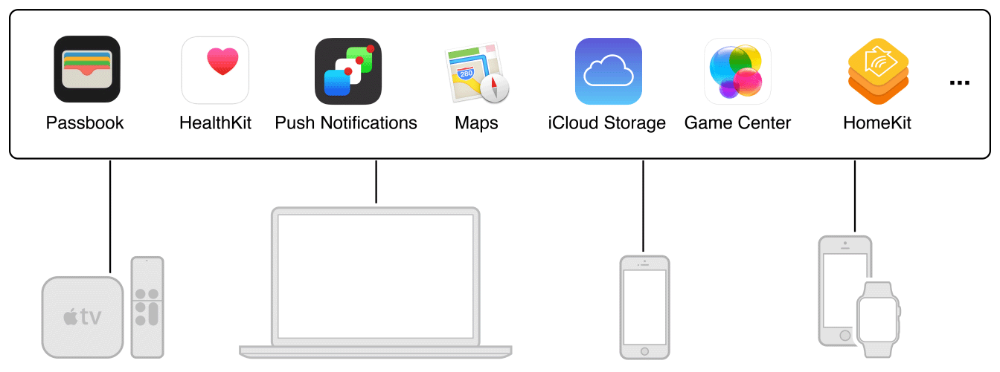
Apple proporciona un conjunto de servicios para ser utilizados por las apps. Apple denomina a estos servicios como Capabilities. Para que una app pueda utilizar cualquiera de estas capabilities debe autorizarse su uso desde la cuenta de desarrollo o desde Xcode.
Dependiendo del tipo de cuenta de desarrollo es posible utilizar unas capabilities y otras. Por ejemplo, podemos utilizar el servicio de mapas o el API de Health Kit con el programa gratuito, pero necesitamos el programa de la universidad para poder utilizar servicios iCloud o notificaciones push. Y existen capabilities avanzadas que sólo pueden ser usadas con el programa de pago.
Para una lista completa de las capacidades disponibles según el tipo de desarrollador se puede consultar la documentación en Apple Developer > Support > Advanced App Capabilities

Podemos explorar en Xcode el listado de capabilities que podemos añadir a nuestra app, accediendo desde la pantalla de Signing & Capabilities a la opción + Capability.
Con el programa gratuito podemos usar el siguiente listado de capabilities:
Con el programa de pago podemos acceder a todos los servicios proporcionados por Apple:
Bundle Identifier¶
Un bundle ID es una cadena que identifica de forma única una app. Cuando definimos el bundle ID de un proyecto, Apple lo registra y no permite que ningún otro desarrollador utilice ese mismo ID. Si intentamos registrar un bundle ID que otro desarrollador ya ha usado Xcode nos informa de un error.
La cadena de bundle ID debe contener únicamente caracteres
alfanuméricos (A-Z,a-z,0-9), guiones (-), y puntos (.). Una forma de
que no existan demasiadas colisiones en los bundle ID es usar un
formato DNS-inverso con el nombre de la app y el dominio de nuestra
organización. Por ejemplo, si el dominio de la organización es
Acme.com y creamos una app llamada Hola podríamos usar como
bundle ID de la app la cadena com.Acme.Hola. También podríamos
usar nuestro nombre y el nombre de la app (si nadie ha registrado una
app con un nombre idéntico al nuestro): domingogallardo.Hola.
La forma de comprobar la disponibilidad del bundle ID es intentar
firmar la app en la pantalla Signing & Capabilities de Xcode. Al
escribir el bundle ID y pulsar Enter Xcode intenta firmar la app y
da un error si el bundle ID ya está cogido.
Uso del Bundle ID¶

Ya que el bundle ID identifica una app de forma única, éste se utiliza en varias fases de su configuración. En concreto, se usa en el proceso de aprovisionamiento de la app y en la configuración de los permisos y capacidades a los que la app puede acceder. Cuando configuramos los permisos para que la app pueda utilizar determinados servicios debemos indicar a qué bundle IDs otorgamos esos permisos. Esto lo hacemos como el App ID.
App ID¶
El App ID es un patrón de texto que da permiso a un único bundle ID (identificador de la app) o a un conjunto de ellos. Un App ID define una lista de capacidades (whitelist) que permitimos usar a una app (explicit App ID) o varias apps (wildcard App ID).
El App ID se puede crear de forma automática desde Xcode o manualmente desde la propia cuenta de desarrollo.
Todos los App IDs creados se guardan en el portal del desarrollador. Los que crea Xcode de forma automática tienen en su nombre el prefijo XC.
Por ejemplo, podríamos crear el App ID
es.ua.mudsdm.icloud.* con la capability de acceso a
iCloud. De esta forma, todos los bundles ID que tengan este prefijo
podrán acceder al servicio.
Una vez creado, el App ID se instala en un perfil de aprovisionamiento que es el que finalmente hay que instalar en la app y permite que ésta acceda a los permisos otorgados. Además, el perfil de aprovisionamiento también contendrá los identificadores de los dispositivos de prueba en los que la app podrá ejecutarse.
En el caso de un desarrollador individual los permisos se gestionan automáticamente desde Xcode, que es quien se encarga de crear el App ID y otorgarle los permisos necesarios.
La cadena del App ID contiene realmente dos partes separadas por un punto: el prefijo, que es el Team ID, y el sufijo que es la cadena de búsqueda del bundle ID propiamente dicha.
Gestión de las capacidades en Xcode¶
Como se ha comentado anteriormente, podemos acceder en Xcode a las capabilities que queremos autorizar en la app que estamos desarrollando.
Para ello debemos seleccionar el target y la opción Signing & Capabilities y pulsar en + Capability.
Una vez seleccionadas las capacidades que necesitamos, Xcode busca en el portal del desarrollador algún perfil de aprovisionamiento con un App ID que empareje el bundle ID y que satisfaga estas necesidades. Si no existe ninguno, crea el App ID y el perfil de aprovisionamiento de forma automática. El App ID lo registra en la cuenta de desarrollo. Sólo lo puede hacer si somos administradores.
Demo¶
Vamos a comprobar el uso de las capacidades (capabilities) en la app
ToDo. Si pulsamos en + Capability veremos que podemos añadir un
amplio conjunto de capacidades a la app. Son muchas más que en
el perfil gratuito, por estar firmando la app con la cuenta de
desarrollador del equipo de la UA.
Pero para poder utilizar la capacidad, ésta debe estar autorizada por
el perfil de aprovisionamiento. Y el perfil de aprovisionamiento
Genérico no autoriza ninguna.
Lo podemos comprobar seleccionando por ejemplo Game Center. Veremos
el siguiente mensaje de error, que el perfil Genérico no autoriza la
capacidad Game Center.

Podemos ver los perfiles en la web del desarrollador del equipo de la UA, y buscar un perfil que autorice esa capacidad.
Vemos que el perfil Master Moviles ToDo contiene las capacidades
Game Center, iCloud, In-App Purchase y Push Notifications. Y
que el App ID autoriza su uso al bundle ID es.ua.mudsdm.ToDo.
Cambiamos el bundle ID de la app a es.ua.mudsdm.ToDo. Ese
mismo identificador puede ser usado por distintos programadores, siempre
que estén en el mismo equipo. En este caso, en el equipo de la UA.
Descargamos el perfil Master Moviles ToDo.
Y podemos comprobar que ahora ya no da ningún error el uso de la
capacidad Game Center.
Al exportar la app tenemos que seleccionar manualmente el perfil correcto:
Fin de la demo¶
Despliegue de apps en dispositivos de prueba¶
Hemos visto que cuando estamos desarrollando una app podemos desplegarla en el dispositivo de desarrollo usando Xcode.
Una vez terminada, y antes de publicarla en la App Store, debemos distribuirla en dispositivos de usuarios prueba para que realicen pruebas más extensas.
Es posible hacerlo declarando los dispositivos de prueba en el portal del desarrollador y añadiéndolos al perfil de aprovisionamiento de la app. Vamos a ver estos conceptos.
Características del dispositivo¶
Cuando compilamos una app podemos especificar ciertas características necesarias que debe tener el dispositivo en el que va a correr la app.
En el apartado Deployment Info de XCode, disponible en la pantalla Target > General podemos definir:
- Tipo de dispositivo: iPhone, iPad o Mac (utilizando Mac Catalyst)
- Sistema operativo mínimo: versión de OS mínima necesaria de los dispositivos en los que se va a instalar nuestra app.
- Características de la interfaz de usuario y de la orientación del dispositivo
Distribución de apps¶
La forma de distribuir apps en la plataforma iOS es la App Store. Para enviar una app al App Store es necesario haberse registrado en el programa de pago de desarrollador de Apple.
Apple proporciona un certificado de distribución necesario para subir la app al App Store. De esta forma, todas las apps en el App Store han sido enviadas por una persona o una empresa conocida.
Las apps enviadas son revisadas por Apple para asegurarse de que funcionan tal y como se describe y que no contiene bugs obvios ni otros problemas evidentes. Este proceso de curación da a los clientes confianza en las apps que compran.
Aprovisionamiento de apps¶
Antes de distribuir la app en el App Store debemos haberla probada en dispositivos de prueba.
Apple permite también distribuir apps de forma restringida, declarando los dispositivos en el portal del desarrollador e incorporándolos en el perfil de aprovisionamiento de la app. Esto solo es posible si tenemos una cuenta de pago de desarrollador o si estamos en un equipo con una cuenta. En nuestro caso usaremos la cuenta del programa de desarrollo de la universidad.
Una vez añadido el perfil de aprovisionamiento a la app, podremos generar el archivo binario .ipa utilizando los métodos de distribución denominados Ad hoc y Development. Con ambos métodos de distribución podemos distribuir el app a aquellos dispositivos incluidos en la lista de dispositivos autorizados del perfil de aprovisionamiento. Con el segundo método podemos además distribuir la app a testers de nuestro equipo de desarrollo.
El perfil de aprovisionamiento de la app también incluye las capacidades declaradas para que la app pueda acceder a servicios de la plataforma Apple (como almacenamiento iCloud, mapas, compras In-App o notificaciones push).
Perfil de aprovisionamiento¶
Un perfil de aprovisionamiento (provisioning profile) es un fichero que contiene una colección de datos (claves públicas de certificados, permisos, UUIDs de dispositivos autorizados, etc.) que conecta desarrolladores y dispositivos a un equipo de desarrollo autorizado y que permite que un dispositivo sea utilizado para pruebas.
Un perfil de aprovisionamiento determina básicamente:
- Qué desarrolladores pueden compilar y distribuir un app.
- Qué servicios puede utilizar una app.
- En qué dispositivos se pueden ejecutar la app.
Un perfil de aprovisionamiento contiene los siguientes elementos:

- App ID: nombre del perfil, cadena de búsqueda y servicios autorizados por el pérfil.
- Certificados de desarrolladores del equipo.
- Dispositivos: Nombre e identificadores de dispositivos.
Físicamente, los perfiles de aprovisionamiento son ficheros XML
encriptados. Los que usa Xcode se guardan en el directorio
Library/MobileDevice/Provisioning Profiles. Podemos acceder a este
directorio desde el terminal o desde el Finder mostrando la carpeta
Biblioteca con el menú Ir + Alt > Biblioteca (el modificador Alt
muestra las opciones ocultas).
Si los borramos de esa carpeta, automáticamente se borran de Xcode (esto es muy útil cuando tenemos algún problema con los perfiles y queremos empezar de cero).
Es posible consultar su contenido desde el terminal con el comando:
security cms -D -i <perfil>.mobileprovision

También podemos visualizar su contenido con la vista previa del Finder:
Dispositivos de prueba en el perfil de aprovisionamiento¶
El perfil de aprovisionamiento de una app se incluye en el binario de la app (fichero .ipa) y se instala automáticamente en el dispositivo cuando se copia la app.
Para que la app se pueda ejecutar en el dispositivo, su UUID debe estar incluido en la lista de dispositivos autorizados del perfil. Además se deben cumplir las siguientes condiciones:
- El bundle ID de la app empareja el App ID del perfil.
- Los permisos solicitados por la app están otorgados en el App ID del perfil.
- La app está firmada por un desarrollador cuya clave pública está en la perfil de aprovisionamiento.
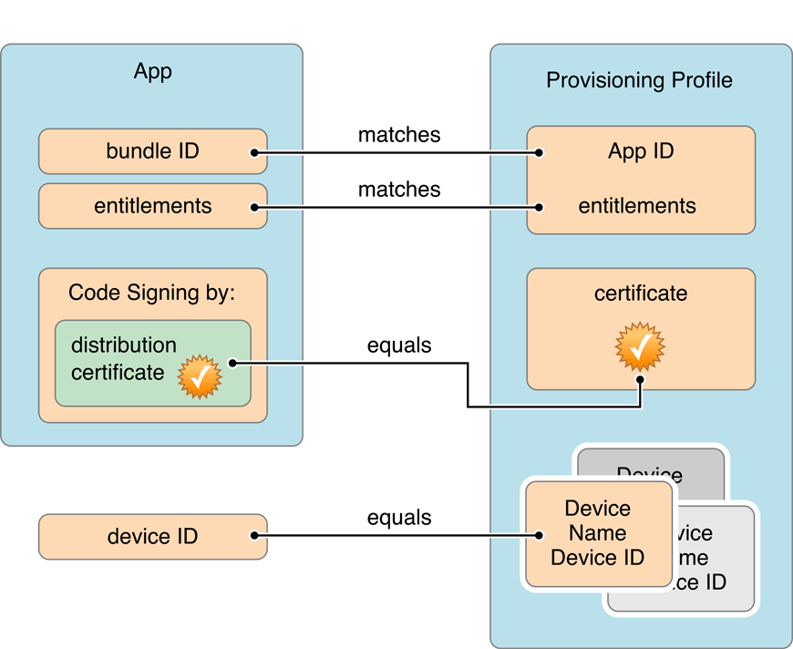
En combinación con el bundle ID, el perfil de aprovisionamiento y los permisos (entitlements) se usan para asegurar que:
- La app ha sido compilada y firmada por nosotros o por un miembro de confianza del equipo.
- Las apps firmadas por nosotros o por nuestro equipo se ejecutan sólo en dispositivos de desarrollo escogidos.
- Las apps se ejecutan únicamente en los dispositivos de prueba que especifiquemos.
- Nuestra app no está usando servicios que no hemos añadido al app.
- Sólo nosotros podemos enviar revisiones del app al store.
Instalación de la app en un dispositivo de prueba¶
Es posible instalar la app en el iPhone de prueba usando Xcode o Apple Configurator.
La aplicación Apple Configurator permite configurar dispositivos, hacer copias de seguridad, añadir apps, etc.
La app se copia en el dispositivo junto con el perfil de aprovisionamiento (está incluido en el ipa). De esta forma, para ejecutar la app no es necesario autorizar el perfil del desarrollador.
Podemos instalar también el fichero ipa desde el panel de gestión de dispositivos de Xcode accesible desde la opción Window > Devices.
Allí también podemos comprobar el perfil de aprovisionamiento recién instalado.
Por último, es posible instalar la app en modo prueba a través de Internet usando la herramienta oficial de Apple TestFlight, con la que se puede instalar la app tanto en dispositivos registrados en el perfil de aprovisionamiento como en dispositivos de usuarios de prueba desconocidos (hasta 10.000 usuarios de prueba). Para usar TestFlight es necesario ser un desarrollador de pago.
Una alternativa gratuita son servicios como diawi o similares, que permiten distribuir la app también por Internet, pero solo a usuarios con el UDID incluido en el perfil de aprovisionamiento.
Tras subir el fichero ipa a la web se genera una URL y un código QR desde la que se puede descargar la app en nuestro dispositivo.
Distribución y ejecución de apps en dispositivos no registrados¶
Existen dos tipos especiales de perfiles de aprovisionamiento que permiten que cualquier dispositivo (no solo aquellos que están registrados en el propio perfil) puedan ejecutar una app:
- El App Store Distribution Provisioning Profile que se utiliza para poder subir la app al App Store de Apple.
- El In-house Distribution Provisioning Profile que se utiliza para poder distribuir una app en la empresa y que debe tener un certificado de empresa de Apple.
Certificados de empresa¶
Los certificados de empresa de Apple han sido noticia recientemente debido a que Apple ha detectado malas prácticas en su uso por parte de Facebook y Google. Como castigo, Apple ha revocado los certificados durante un par de días. Durante ese tiempo, las apps in-house de esas compañías han dejado de funcionar.
El mal uso de Facebook y Google de estos certificados ha puesto al descubierto la existencia de una gran cantidad de sitios que hacen un uso fraudulento de los certificados de empresa de Apple para distribuir apps no permitidas en el App Store (de juego o pornografía) como si fueran apps in-house.
Demo y ejercicio¶
Resumen del flujo de trabajo¶
Vamos a comprobar que es necesario firmar digitalmente la app para poder ejecutarla en un dispositivo y usar ciertos servicios como CloudKit, Game Center o compras In-App. Además, veremos que la app puede ejecutarse en todos aquellos dispositivos que hayamos registrado y añadido en el perfil de aprovisionamiento usado para firmar la app (además de en el dispositivo de desarrollo autorizado por Xcode).
Veremos que si seleccionamos la opción de firma automática en Xcode, Xcode creará estos elementos de forma automática. También comprobaremos cómo el administrador puede configurar App IDs y perfiles de aprovisionamiento en la web del equipo de desarrollo de Apple.
Un resumen de los pasos que vamos a seguir en el ejercicio:
- Nos damos de alta al equipo de la universidad.
- El administrador del equipo de la universidad crea un App ID con ciertas capacidades y un perfil de aprovisionamiento con ese App ID, los dispositivos de prueba y los desarrolladores del equipo.
- Compilamos la app, añadimos las capacidades necesarias y la firmamos con la cuenta del equipo.
- Exportamos el fichero .ipa compilado de la app.
- Instalamos y ejecutamos la app en un dispositivo de prueba.
Equipo de desarrollo del programa de Universidad¶
La mayoría de opciones en el portal del desarrollador serán sólo accesibles para consulta. Será el administrador del equipo de la Universidad el que podrá cambiarlas.

Es necesario crear un nuevo certificado para el desarrollador, distinto del certificado individual. Servirá para firmar aplicaciones desarrolladas en el equipo en el que se ha añadido al desarrollador.
Se puede hacer desde Xcode, seleccionando el equipo Universidad de Alicante y la opción Manage Certificates.... Será un certificado de tipo iOS App Development.

Para confirmar que se ha creado el nuevo certificado, podemos entrar en el portal del desarrollador o en la aplicación de Acceso a llaveros:
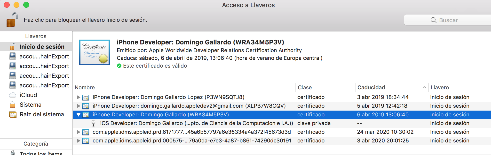
Incorporación de certificado a un perfil de aprovisionamiento (administrador)¶
Para poder firmar y distribuir apps el certificado recién creado debe estar incluido en un perfil de aprovisionamiento compatible con la app que estamos desarrollando.
Vamos a incorporar los nuevos certificados al perfil de
aprovisionamiento genérico, con App ID comodín (es.ua.*) con el que se
puede distribuir cualquier app que tenga un bundle id que comience
por es.ua.
Firma de la app con el nuevo certificado¶
Para firmar la app con el nuevo certificado desmarcamos la opción para que Xcode gestione automáticamente la firma. De esta forma podremos gestionar manualmente qué perfil de aprovisionamiento es el que utilizamos.
Seleccionamos el team Universidad de Alicante. Y escribimos como
bundle id es.ua.mudsdm.ToDo.
En el desplegable Provisioning Profile seleccionamos la opción Download Profile....
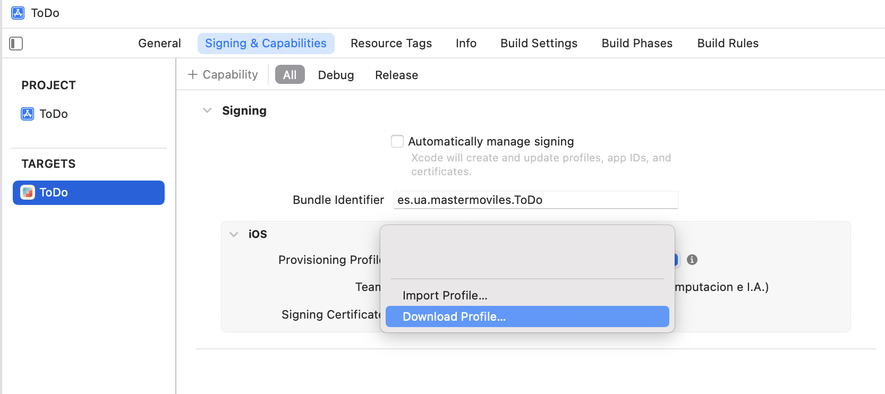
Aparece un listado con todos los perfiles de aprovisionamiento creados en nuestro equipo en el portal del desarrollador. Podemos examinarlos y seleccionar el más apropiado. Seleccionamos el denominado Genérico.
Vemos que se firma la aplicación correctamente y que se añade el
perfil de aprovisionamiento que hemos seleccionado. Asegúrate que
marcas la opción All para firmar con el perfil tanto la opción de
Debug como la de Release.
La ventaja principal de firmar las apps de esta forma es que podremos distribuirlas a cualquier dispositivo incluido en el perfil.
Prueba que es posible generar un fichero .ipa seleccionando
la opción Product > Archive. Para ello debe estar seleccionada la
opción Generic iOS Device en el menú de ejecución. Si está
seleccionado un modelo concreto de iPhone la opción Archive se
deshabilita.
El perfil genérico no tiene configurado ningún servicio¶
Vamos ahora a intentar añadir una capability. Por ejemplo,
la de Game Center. Lo podemos hacer pulsando en el botón + Capability,
seleccionando la opción Game Center.
Intentamos compilar la app (Product > Build) y aparecerá el siguiente error:
El error se debe a que el perfil de aprovisionamiento seleccionado no soporta la capacidad Game Center.
Es el administrador de la cuenta de la UA el que debe crear un perfil de aprovisionamiento para la app en el portal del desarrollador e incorporar en ese perfil el certificado del desarrollador.
Examinamos los perfiles de aprovisionamiento¶
Podemos examinar los perfiles de aprovisionamiento desde el portal del
desarrollador, desde Xcode y desde el terminal o el Finder (en el
directorio Library/MobileDevice/Provisioning Profiles). Podemos
acceder a la carpeta Library desde el Finder con el menú Ir + Alt >
Biblioteca (el modificador Alt muestra las opciones ocultas). Si
borramos los perfiles de esa carpeta, automáticamente se borran de
Xcode (esto es muy útil cuando tenemos algún problema con los
perfiles y queremos empezar de cero).
En el portal del desarrollador tenemos que entrar en la opción Certificates, Identifiers and Profiles para entrar en la página de gestión de los perfiles de aprovisionamiento.
Menú de opciones¶
El portal del desarrollador contiene todos los perfiles de aprovisionamiento creados, junto con la información asociada.
- Certificados: todos los certificados de los desarrolladores del equipo.
- Identificadores: todos los App IDs aprobados, con las características aprobadas en cada uno de ellos.
- Dispositivos: todos los dispositivos aprobados para probar las apps
Creación de un App ID desde el portal del desarrollador (administrador)¶
Sólo se puede hacer con el rol administrador. Se pulsa + en la
cabecera Identifiers. Se selecciona la opción Register a New
Identifier y se escoge la opción App IDs. Vemos que hay otros
posibles identificadores que podemos crear.
Se define la descripción del App ID y el prefijo de App ID (que debe
emparejar con el bundle id de la aplicación). Se escoge la opción
Explicit para indicar que no se va a usar un prefijo con comodín. La
app deberá tener exactamente el bundle id
es.ua.mudsdm.ToDo para poder aplicarse el App ID.
Se puede comprueba que la capability Game Center ya está seleccionada por defecto.
Confirmamos y el App Id queda registrado en el portal del desarrollador:

Una vez creado el App Id en el que definimos las capacidades del app, podemos pasar a añadir los dispositivos en los que vamos a permitir probar el app. Y, por último, crearemos un perfil de aprovisionamiento que contenga el App Id y los dispositivos y que se descargará la app.
Dispositivos (administrador)¶
Para añadir un dispositivo al portal del desarrollador hay que seleccionar la opción correspondientes (Devices) y añadir su UDID, Unique Device Identifier.
El UDID es una cadena de 40 caracteres de símbolos alfanuméricos (a-z y 0-9) única de cada dispositivo. Se puede obtener desde Xcode en la pantalla de Dispositivos (Window > Devices).
Se pueden registrar en el portal del desarrollador hasta 200 UDIDs para probar aplicaciones en desarrollo.
Creación de perfiles de aprovisionamento (administrador)¶
Una vez creado el App ID con los permisos necesarios, añadidos los certificados de los desarrolladores del equipo y añadidos los dispositivos es posible crear un nuevo perfil de aprovisionamiento.
Se puede hacer desde el portal del desarrollador y también desde Xcode. Es más claro ver el proceso desde portal del desarrollador, ya que Xcode mezcla el proceso de creación del perfil con el de dar autorizaciones (entitlements) a la propia aplicación.
Para crear un nuevo perfil de aprovisionamiento desde el portal del desarrollador, se selecciona la opción iOS App Development.
Se selecciona el App ID que queremos incluir en el perfil:
Se seleccionan los certificados de los desarrolladores a los que van a utilizar este perfil para compilar apps en Xcode:
Se seleccionan los dispositivos en los que vamos a poder probar la app:
Por último se da un nombre al perfil de aprovisionamiento:
Y aparece una pantalla con el resumen del perfil generado. Se puede descargar en el ordenador para después añadirlo manualmente a la app usando Xcode. También se puede descargar directamente desde Xcode.
Listado de los perfiles de aprovisionamiento creados en el portal de desarrolladores:
Firma de la app ToDo con el perfil de aprovisionamiento creado¶
Una vez creado el perfil de aprovisionamiento ya es posible instalarlo en la app.
Igual que antes nos aseguramos de que tenemos activa la opción manual y volvemos a seleccionar Download Profile.... Veremos ahora que ha aparecido el perfil que el administrador ha añadido. Lo seleccionamos:
Y ahora ya podemos ver que desparece el error anterior porque el nuevo perfil ya tiene la capacidad Game Center.

Exportar la app¶
Seleccionando en Xcode la opción Product > Archive (hay que asegurarse de que el tipo de dispositivo seleccionado es Generic iOS Device) ahora ya funcionará la opción Distribute App.
Las opciones App Store y Ad Hoc no funcionan por no tener una cuenta de universidad permisos para subir apps al App Store. Se puede hacer con una cuenta de pago. En la opción Ad Hoc es posible definir una URL privada para descargar la app y probarla.
La única opción de exportación que funciona es Development, que permite distribuir la app a cualquier dispositivo incluido en el perfil de aprovisionamiento.
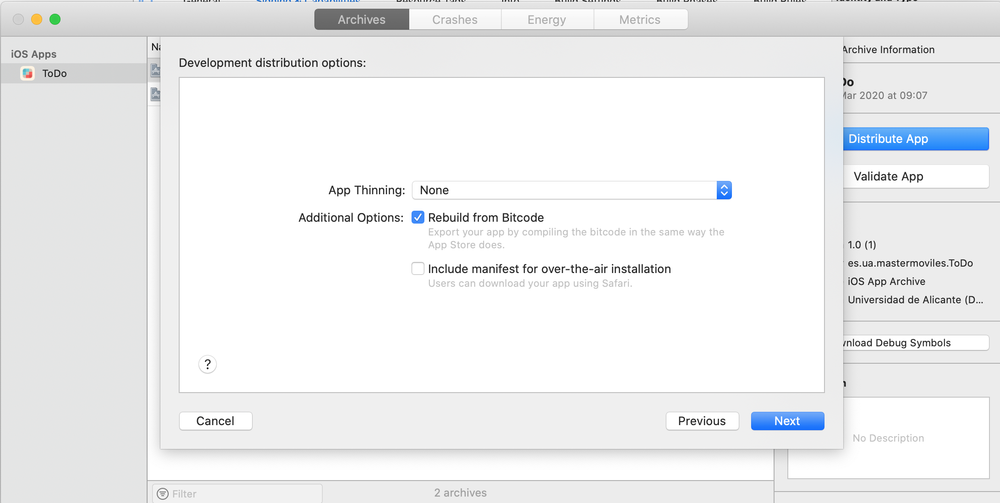
La opción de App Thining permite generar distintos ficheros ipa
adaptados a cada tipo de dispositivo, lo que minimiza el tamaño del
fichero. Si no se selecciona, se genera un único fichero ipa que
puede ejecutarse en cualquier dispositivo.
Seleccionamos el perfil de aprovisionamiento que acabamos de crear
Master Moviles ToDo.
Y, por último, confirmamos la opción de exportar:
Tarda un rato en generar el fichero ipa (iOS App file).
Se genera una carpeta con un fichero ToDo.ipa, que es un binario que
se puede instalar sólo en dispositivos autorizados en el perfil de
aprovisionamiento.
Instalación y ejecución de la app¶
Probamos a instalar la app en un dispositivo autorizado (su UUID está incluido en el perfil de aprovisionamiento) usando Apple Configurator.
Para poder ejecutar la app en el dispositivo debemos activar el modo de desarrollador.